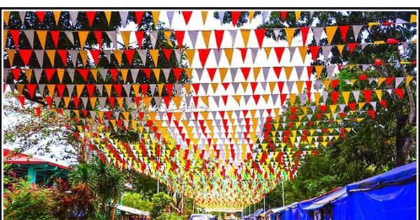
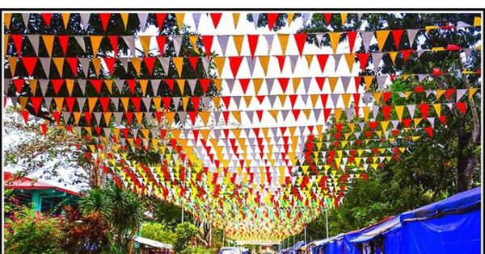

Discover the vibrant and colorful events and festivals celebrated in Liloan, Cebu.
Held every May, this cherished religious celebration honors the town's patron saint, San Fernando Rey.
View MoreCelebrated every May, the Rosquillos Festival pays homage to Liloan’s famous delicacy.
View MoreEvery December, Liloan transforms into a dazzling wonderland during the Christmas Festival.
View MoreThroughout the year, Liloan’s barangays host their own unique fiesta celebrations.
View MoreCelebrating the iconic Parola of Liloan, this festival highlights the town's maritime heritage.
View MoreThe highlight of the festivities is the vibrant fluvial procession, where elaborately decorated boats sail along the coastal waters, symbolizing blessings and protection for the community. The day is filled with traditional Mass services, cultural performances, and community feasts, fostering unity and showcasing the deep devotion of the people of Liloan. Visitors can also enjoy various local delicacies served during the celebrations and participate in interactive activities that reflect the rich cultural heritage of the town.
Explore the rich history of Rosquillos, the famous delicacy, and the colorful festival dedicated to it. The festival features lively street dances, colorful parades, and engaging cultural presentations that narrate the story behind the beloved treat. Culinary enthusiasts can look forward to food exhibits showcasing the best rosquillos and other local specialties. The event culminates in a grand showdown of performers, making it a vibrant celebration of Liloan's creativity and culinary legacy.
Enjoy the dazzling lights and festive events held during the Christmas season in Liloan.The event kicks off with a grand Christmas tree lighting ceremony, where a giant tree adorned with thousands of lights becomes the centerpiece. The town is decorated with festive displays, and nightly events include caroling competitions, musical performances, and family-friendly activities. Visitors can also enjoy Christmas markets offering unique crafts and delicious holiday treats, making it a magical experience for all.
Discover the unique celebrations and traditions of each barangay throughout the year.Throughout the year, Liloan’s barangays host their own unique fiesta celebrations, each reflecting the distinct traditions and pride of the community. These events often feature vibrant parades, cultural dances, and friendly competitions such as sports tournaments and cooking contests. Families open their homes to guests, offering hearty meals and warm hospitality. It’s a wonderful opportunity for visitors to experience the grassroots charm of Liloan, taste authentic local dishes, and connect with the locals on a personal level.
 

The Parola Festival honors Liloan's historic lighthouse, a cherished symbol of guidance and strength. This vibrant event features a captivating lighting ceremony that illuminates the iconic structure, accompanied by cultural dances, musical performances, and storytelling sessions about the lighthouse's rich history. Visitors can immerse themselves in the festive atmosphere, enjoy local delicacies, and participate in fun activities such as lantern-making workshops and guided tours of the lighthouse. The festival serves as a reminder of Liloan’s deep-rooted maritime heritage and its community's enduring spirit.